ISOLATED / LOCAL ONLY
PiXiEEDstudio
iDRAW・iAUDIO・iGAMEをひとつのProjectで扱うProfessional Workspaceの隔離Entryです。既存のプロジェクトデータは変更しません。

CREATE YOUR WORLD
What do you want to create?
iDRAW・iAUDIO・iGAMEを、ひとつのProjectで始められます。
RECENT
Recent projects
Select a Draw frame in the Timeline to open this dedicated preview.
Track type is chosen first, then its sound source is assigned.
WorkspaceはKill Switchで停止しました。既存のReference UIへ戻しています。
PROJECT
Create / Open local Project
Preparing workspace…
Export／Importはこの隔離Entryのローカル操作です。Legacy PXDは原本を変更せずiDRAW working copyへ読み込みます。現行PXD、PiXYNC、Server、Marketへは接続しません。
iGAME RUNTIME PREVIEW
Game Scene Preview
Game Projectを読み込み中です
矢印キー / WASD で操作できます。敵よけゲームは15秒生き残るとクリアです。iDRAWとiAUDIOの素材は参照として読み込みます。LIVEはPreviewだけが追従し、Build時はPINNEDへ固定します。外部Buildと公開は別操作です。
高度ツール
Professional Pixel Art Features
まだ読み込まれていません。読み込むと使用できます
Pattern／Mirrorはキャンバス外でPreviewを計画します。Grid／GuideはOverlayです。CommitはローカルのEditor Adapter境界を通る操作です。
- Canonical raster: indexed／sparse／COW · one committed tool operation = one undo
- Overlay: Grid／Ruler／Guide／Reference／Slice · toggle does not rewrite pixels
- Compatibility: Legacy PXD／current Draw／PiXYNC remain lazy and unchanged
LOCAL SELECTION / TRANSFORM
Selection Preview Contract
scope=loading · selection=none
Canvasでは離すと選択が確定します。選択範囲の内側をドラッグすると移動、Alt+ドラッグで複製移動、Shiftで追加、Altで範囲外からの減算になります。矢印キーで1px、Shift+矢印キーで8px移動できます。矩形選択をダブルクリックしてそのままドラッグすると、16px単位で選択できます。
PreviewはOverlayのみを更新します。Commit時だけ1つのCanonical Operationとなり、CancelはRaster、Journal、COWを変更しません。
Frame — · Layer — · Onion off